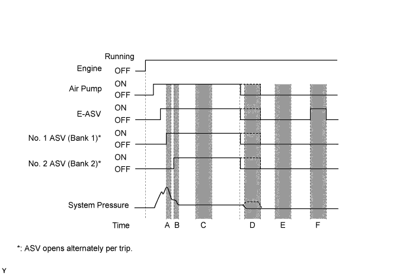
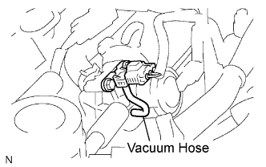
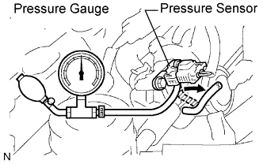
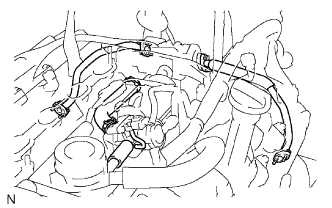

DTC P2444 Secondary Air Injection System Pump Stuck On Bank1 |
DTC P2445 Secondary Air Injection System Pump Stuck Off Bank1 |


| Time A [Pressure Change] | Time B [Pressure Change] | Time C [See Chart Below] | Time D [Exhaust Pulse] | Time E [Exhaust Pulse] | Time F [See Chart Below] | DTC |
| Yes | Yes | Pattern 1 | - | No | Pattern 4 | Normal |
| Yes | No | Pattern 1 | Yes | No | Pattern 4 | |
| Yes | Yes | Pattern 1 | - | No | Pattern 1 | P1441 P1444 P2444 |
| No | Yes | Pattern 1 | - | No | Pattern 1 | |
| Yes | No | Pattern 1 | Yes | No | Pattern 1 | |
| No | No | Pattern 1 | Yes | No | Pattern 1 | |
| Yes | Yes | Pattern 1 | - | No | Pattern 3 | P2444 |
| No | Yes | Pattern 1 | - | No | Pattern 3 | P1442 P1445 P2444 |
| Yes | No | Pattern 1 | No | No | Pattern 3 | |
| No | No | Pattern 1 | No | No | Pattern 3 | P1442 P1444 P2444 |
| No | No | Pattern 2 | - | - | - | P2445 |
| No | No | Pattern 4 | - | - | - | P1442 P1445 P2441 P2444 |
| No | No | Pattern 3 | No | No | Pattern 3 |
| Pattern | System Pressure | Exhaust Pulse |
| 1 | High | Yes |
| 2 | Low | Yes |
| 3 | High | No |
| 4 | Low | No |
| DTC Code | DTC Detection Condition | Trouble Area |
| P2444 | The air pump is stuck on (2 trip detection logic). |
|
| P2445 | - The air pump is stuck off (2 trip detection logic). - The air injection amount is insufficient (2 trip detection logic). |
|
| 1.PERFORM SECONDARY AIR INJECTION SYSTEM CHECK (AUTOMATIC MODE) |
Connect the intelligent tester to the DLC3.
Turn the engine switch on (IG) and turn the tester on.
Record the DTCs and freeze frame data.
Clear the DTCs (Click here).
Warm-up the engine.
Enter the following menus: Powertrain / Engine and ECT / Utility / Secondary Air Injection Check (Automatic Mode).
Perform the Active Test and check the pending DTC.
| Result | Proceed to |
| P2444 and P2445 is output | A |
| DTCs other than P2444 and P2445 are output | B |
| No DTC is output | C |
|
| ||||
|
| ||||
| A | |
| 2.CHECK VACUUM HOSE |
 |
Remove the intake manifold (Click here).
Check the vacuum hose connection between the pressure sensor and air switching valve.
Inspect the vacuum hose for blockage and damage.
|
| ||||
| OK | |
| 3.READ VALUE USING INTELLIGENT TESTER (AIR VOLTAGE) |
 |
Remove the intake manifold (Click here).
Connect the pressure gauge to the pressure sensor as shown in the illustration.
Connect the intelligent tester to the DLC3.
Turn the engine switch on (IG) and turn the tester on (do not start the engine).
Enter the following menus: Powertrain / Engine and ECT / Data List / Air pump pressure.
When applying pressure by the hand pump, check that the air pump pressure is almost same as the pressure gauge indication.
|
| ||||
| OK | |
| 4.CHECK HOSE AND PIPE |
 |
Remove the intake manifold (Click here).
Check that all the pipes and hoses between the air pump and air switching valve are securely connected.
Check all pipes and hoses for blockages and damage.
|
| ||||
| OK | ||
| ||